"Система управления паркингом ЖК" — это программное решение для автоматизированного контроля и управления парковочными местами в жилом комплексе. Система позволяет жителям бронировать парковочные места, отслеживать их занятость и управлять оплатой. Поддерживаются как платные, так и бесплатные зоны парковки, а также наличие нескольких выездов.
Парковка в жилых комплексах часто сталкивается с проблемами недостатка мест, несанкционированной парковки и отсутствия удобного способа управления распределением мест между жильцами. Автоматизированная система позволяет эффективно контролировать использование парковочного пространства, обеспечивать удобный доступ и исключать использование парковки посторонними лицами. Возможность учета нескольких выездов повышает гибкость системы.
С увеличением числа автомобилей и ограниченными парковочными местами в жилых комплексах необходимо эффективное управление этим ресурсом. Система управления паркингом для ЖК позволяет жильцам удобно резервировать места, предотвращает несанкционированную парковку и упрощает контроль для администрации комплекса. Поддержка платной и бесплатной парковки делает систему более гибкой, а возможность учета нескольких выездов обеспечивает удобство передвижения. Это решение улучшает комфорт проживания и снижает конфликты между жильцами.
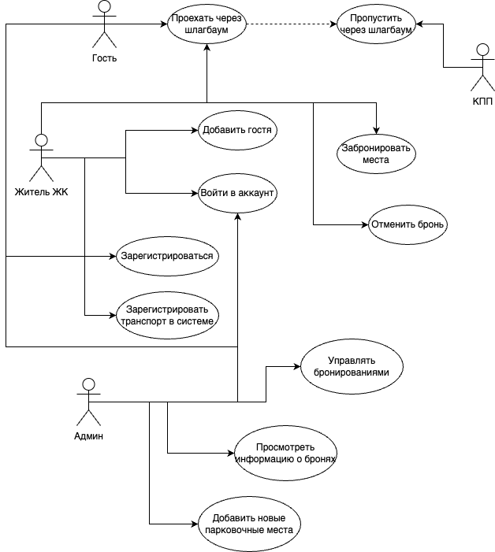
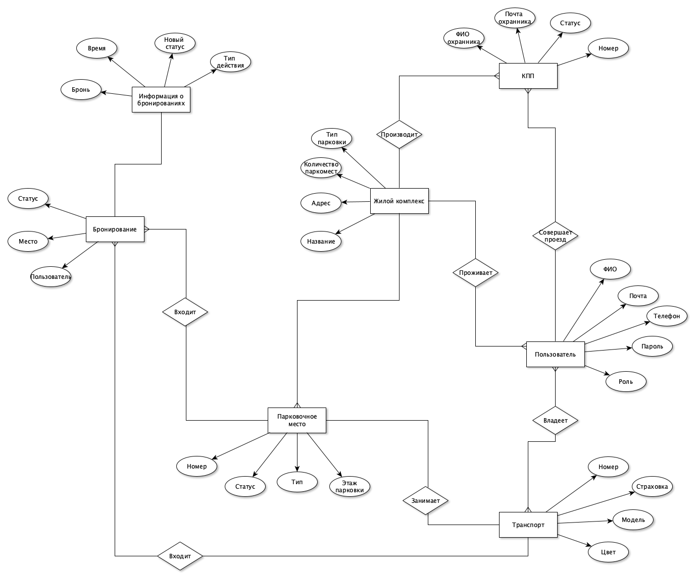
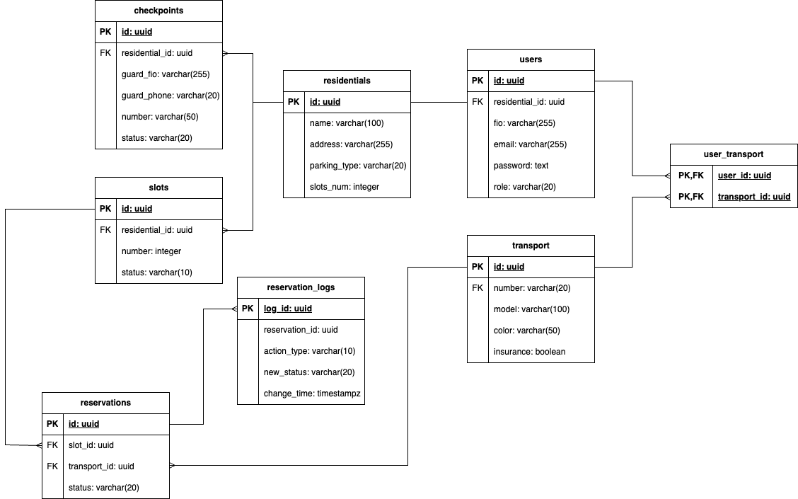
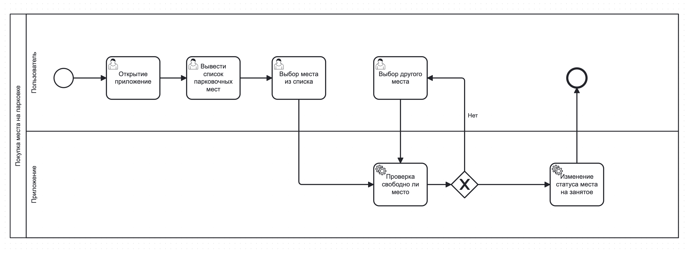
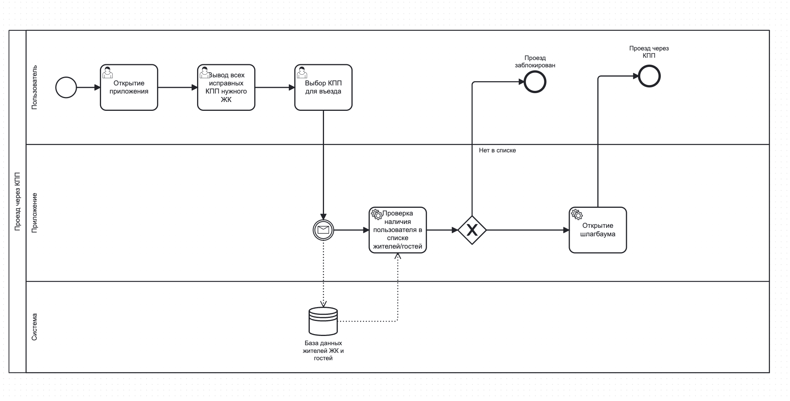
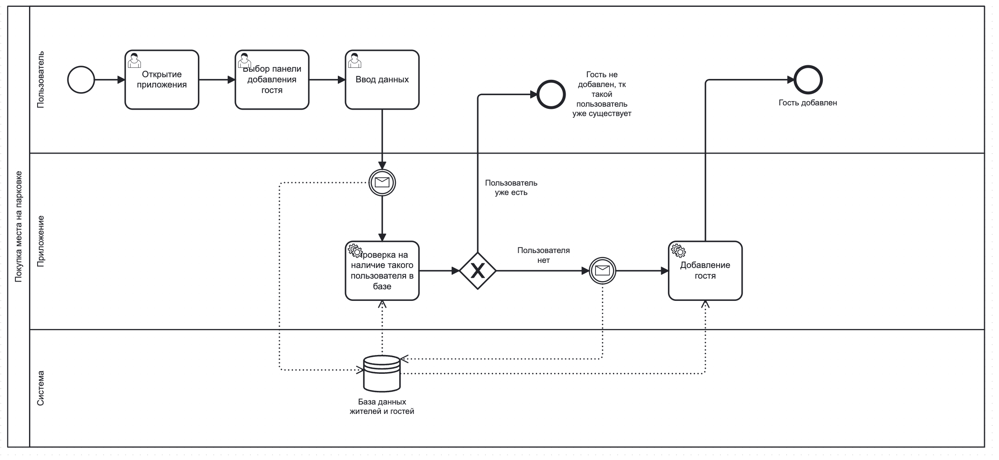
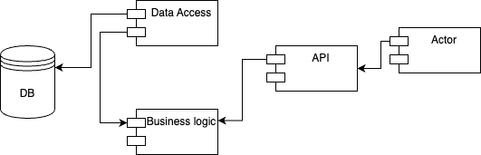
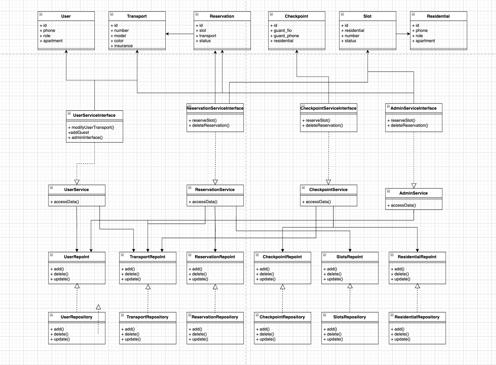
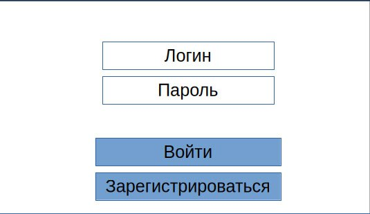
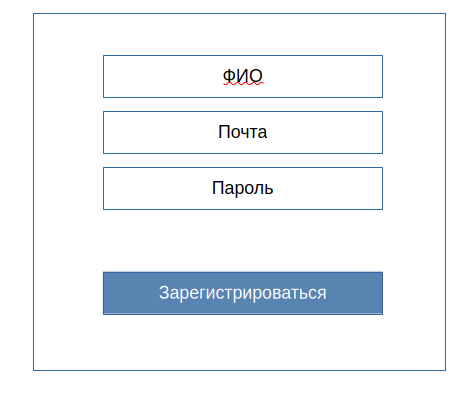
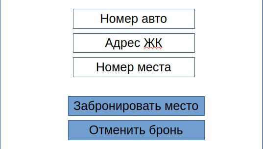
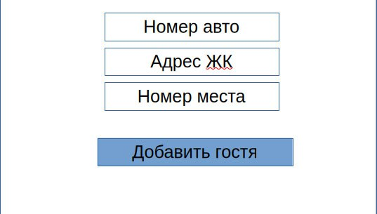
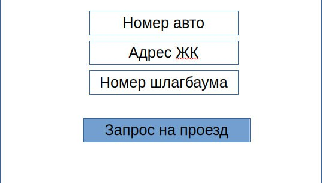
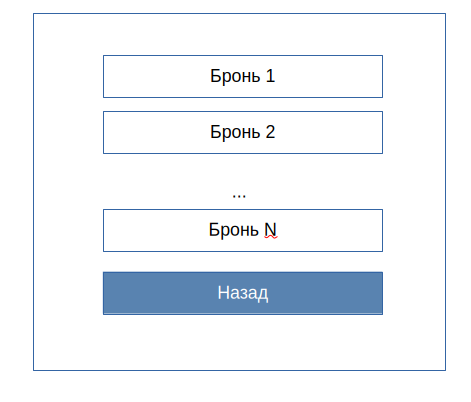
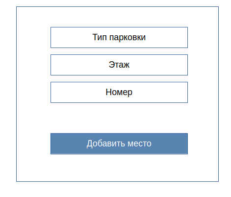
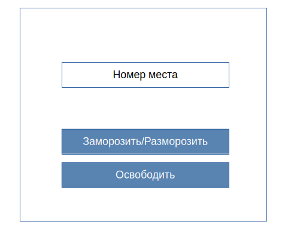